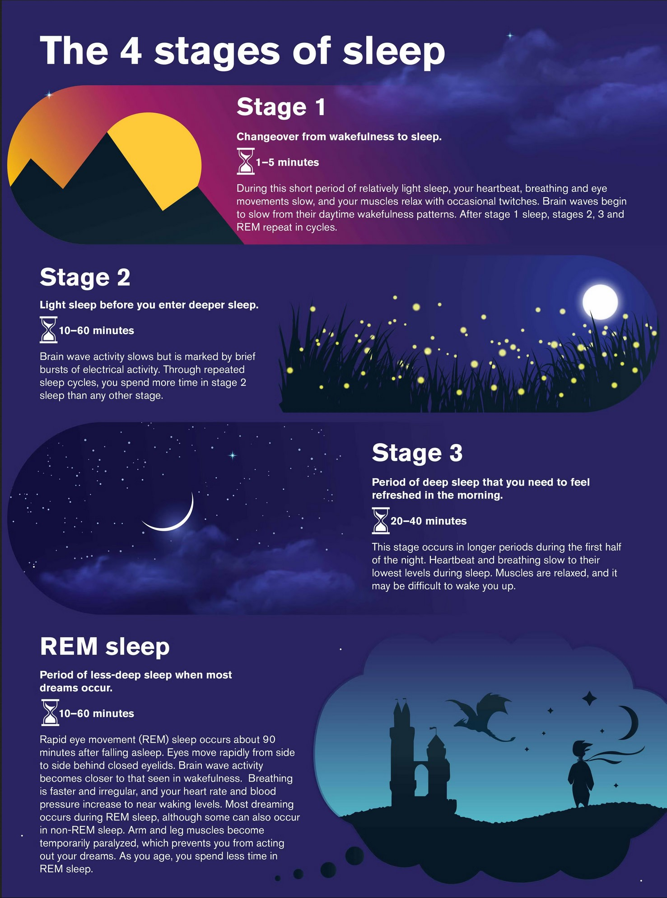

Understanding Your Sleep Cycle
Sleep is more than just resting – it’s a complex process that happens in stages. Each night, your body goes through several 90-minute sleep cycles, which include four different stages:
-
Light Sleep (Non-REM): This is the transition stage where you drift between being awake and asleep. Your body starts to relax, and your breathing and heart rate slow down.
-
Deeper Light Sleep (Non-REM): At this stage, your brain activity slows further, body temperature drops, and you move closer to deep sleep.
-
Deep Sleep (Non-REM): This stage, also called slow-wave sleep, is crucial for physical restoration. Your body repairs tissues, strengthens the immune system, and builds energy for the next day.
-
REM Sleep (Rapid Eye Movement): This is the dreaming stage, where your brain becomes highly active, almost like when you’re awake. REM sleep plays a key role in processing emotions, consolidating memories, and enhancing creativity.
The Role of Circadian Rhythms
Your sleep is guided by your body’s internal clock, known as the circadian rhythm. This 24-hour cycle regulates when you feel awake and when you feel sleepy. It’s influenced by exposure to light and dark, which is why getting sunlight during the day and minimizing screen time at night can improve your sleep-wake cycle. Disruptions to your circadian rhythm, like staying up late, traveling across time zones, or working night shifts, can throw off your sleep and impact your energy levels.
Why Each Stage Matters
Each sleep stage plays a unique role in supporting your body and brain. Light sleep, which includes the first two stages, helps you transition from wakefulness into deeper sleep by slowing down your breathing, heart rate, and brain activity. This is followed by deep sleep, also known as slow-wave sleep, which is essential for physical recovery, including tissue repair, immune system strengthening, and energy restoration. During this stage, your body focuses on healing and recharging for the next day. REM sleep, the final stage of the cycle, is when your brain becomes highly active, allowing you to dream while processing emotions, consolidating memories, and enhancing creativity. Together, these stages ensure that both your body and mind receive the restoration they need to function at their best.
- Light Sleep: Helps you transition from wakefulness to deeper sleep.
- Deep Sleep: Vital for physical recovery, immune function, and energy restoration.
- REM Sleep: Essential for processing emotions, learning, and memory consolidation.
If you don’t cycle through these stages properly, your body misses out on important processes that keep you healthy, which is why getting uninterrupted sleep is so important.
Optimizing Your Sleep Cycles
To help your body move smoothly through each stage of sleep, try these tips:
- Get Sunlight Exposure in the Morning: Natural light helps regulate your circadian rhythm and improves alertness during the day.
- Keep Your Bedroom Dark at Night: Darkness signals your body that it’s time to rest, helping you fall asleep faster.
- Limit Naps to 20 Minutes: Long naps can interfere with your sleep cycle, especially if taken late in the day.
- Avoid Large Meals Before Bed: Eating too close to bedtime can disrupt your ability to reach deep sleep.
- Stay Consistent: Aim to go to bed and wake up at the same time every day to support a balanced sleep cycle.
Understanding how sleep works can help you get the rest you need to thrive. Make sleep a priority and unlock the full benefits of each stage!